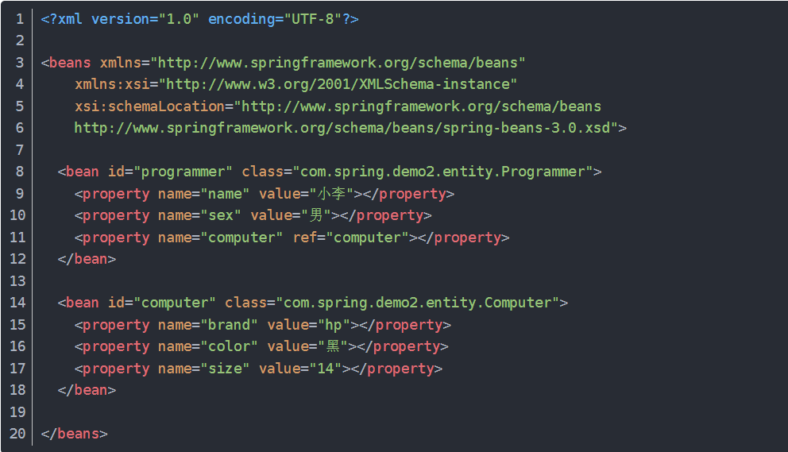

依赖注入（DI）、控制反转（IOC）和自动装配 #
控制反转基本概念： 将对象的创建和管理的控制权，从某个实体类，转交给Spring。
依赖注入基本概念： 对象间的依赖关系将被自动注入到需要他们的对象中去。
在传统模式中，类需要哪些资源就要自己去new出来， 现在则统一由Spring提供，从主动变成了被动。称为控制反转。
Spring框架控制的资源全部放置在Spring底层的IOC容器中。
- 控制反转可以理解为一种交给外部管理类依赖资源的设计模式
- 依赖注入是控制反转的一种实现形式
- 指的是组件自身提供普通的Java方法声明依赖关系。容器全权负责组件依赖关系的装配，将根据这些声明主动将符合依赖关系的对象传递给需要的对象。
- 为了实现控制反转的概念，Spring实现了依赖注入的机制
依赖注入机制的使用方式：
- 属性注入形式 xml方式：使类有Set方法，并设置bean和property。Spring读取xml文件时，认为需要向bean a注入bean b。这实质上是通过，使类有set方法，从而可实现用xml文件声明属性依赖关系，从而声明依赖关系，寻求注入的方式。

-
构造器注入形式 xml方式：使类具备有参构造函数，并设置bean和property。实质上与上述是相似的，只是多支持了一种声明的方式。

-
Java显式配置
- 通过注解，描述某个类应该作为Bean被容器管理，且内部包含一些如何在上下文中创建Bean的细节。如@Configuration。
- 通过注解，描述某个方法的返回结果应该作为Bean被容器管理，如@Bean。
上述的依赖注入的使用方式，实际上都是在告诉Spring如何装配对象间的依赖关系。 Spring对于描述Bean如何进行装配时，提供了三种主要的装配机制：
- XML中显式配置描述
- Java中显式配置描述（就是通过@Configuration+@Bean描述Bean的创建）
- 隐式的Bean发现机制和自动装配（就是通过@Component+@Autowired等描述自动扫描和注入）
自动装配的Spring实现：
-
组件扫描：通过注解配置，Spring会自动发现应用上下文中创建的Bean
- 通过@ComponentScan配置组件扫描的包
- 通过@Component声明一个类为组件
- Spring将扫描包并找到组件，为这些组件创建Bean并放入容器中
-
自动装配：Spring自动满足Bean之间的依赖关系
- 在构造器上加上@Autowired，则Spring构造对象时，将传入对应的Bean。（注解式的构造器注入）
- 在Setter或其他方法上加上@Autowired，则Spring初始化Bean后，会尽量满足Bean的依赖，就会注入指定的Bean。（注解式的属性注入）
- 将@Autowired直接加在属性上
控制反转的优点： （理解中，依赖注入和自动装配机制，都是为了让控制反转模式能够合理运行的实现） 如A需要B实现功能 按传统模式，则需要在A中new B()，这时当B需要改动时，则A与B有关的功能代码可能都需要改动。 有了控制反转，将依赖关系交给容器装配，则我们只需改动B，就可以让容器初始化一个不同的B注入到A中，尽量少地避免了上层的改动。 这其实是依赖倒置原则的实现。实现依赖倒置原则，使得高层建筑可以不关心底层建筑的实现，避免牵一发动全身。 为了实现依赖倒置原则，思路是做控制反转，方法是实现依赖注入，为了实现依赖注入，做了个IOC容器去管理Bean的生成和装配等。 降低了组件间的耦合度。
在Spring项目中的影响逻辑： 由于依赖倒置原则具有修改底层建筑，尽量少地影响上层建筑地好处。 Spring为了实现依赖倒置原则，构想了控制反转的模式，即将对象的创建、装配、生命周期管理等，交给IOC容器来进行，相比让对象自己去new，使得组件间耦合度降低 IOC容器管理Bean，首先是在启动时，通过读取XML、Java注解等方式，理解声明的Bean和装配方式，生成Bean并注册到容器中。进行后续管理。 组件的耦合度降低页实现了Controller、Service、DAO软件各层之间的解耦 IOC容器创建Bean提供了单例模式的支持，使得开发人员不需要自己实现 切面机制受IOC的影响暂定 组件间的解耦使得Spring使用第三方组件时可以实现无痛的切换底层实现，优势仅需修改一些配置，即可使得实例化地Bean是另一套实现，则被注入地是另一套实现，只需做好底层接口即可。